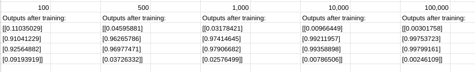
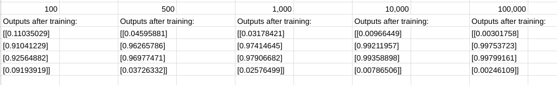

Back to the Future Game
This Back-to-the-Future-themed game has one objective: get Doc and Marty back to the present. Fly in the Delorean, collecting electricity (lightning) and avoiding the clouds. You’ll need to fill the battery to 1.21 gigawatts in order to successfully time travel. Once you do, click back to the present and you’ll see a tally in the corner of how many times you’ve time-traveled. This project propelled my understanding of programming. It was my final project for an online scratch course and incorporated what we had learned into one final game. It took hours to finish, but it was enjoyable to solve the problems along the way and create a game from the ground up.
Calculus in Music and Sound: Capstone Project
I created an apparatus with springs and weights that demonstrated the relationship between mass, frequency, and spring rigidity. The bulk of the information is within the essay and slideshow presentation. This project connected physics, calculus, and music theory and explains the math behind these concepts. As I explored the connections between subjects I learned so much more about music theory, and shared that knowledge as I presented to my classmates.
Pi Pico Stoplight
My partner and I coded a Pi Pico to create an LED stoplight. We connected neopixels to the small computer and created the colors with hexidecimal values. By coding in MicroPython in the application Thonny, our stoplight come to life.

Polygon Generator
This app took the critical thinking of programming, and brought it into the world of geometry. Click on a shape and watch as the pencil draws it. Also, try the custom option. Enter the number of sides and the radius of your shape, then click to draw. This project taught me to think like a computer. Any abstraction did not work, forcing me to think about the pure mathematical algorithms.
Spanish Text-To-Speech Reader
For my personal AP Computer Science project, I created a simple Spanish Language Text-To-Speech application on the coding platform, Snap. First, I researched the phonemes of the Spanish language. Then, I used pronuciation rules to create a catalog of psudocode for letter combinations and their sounds. After recording the individual sounds and clipping them to the perfect length, I created my sequence of sounds that, when strung together with my rules, will say a user-inputted word.

"Lock-Ness" Password Manager
This application is intended to make digital security seamless. It stores websites and their passwords so users can keep track of the diverse and complicated passwords necessary for digital security. We even included our own security measures by including a user authentification password screen of our own.
 

Neural Network, Machine Learning Project
For my personal class project, I researched machine learning through neural networks. Explore my notes and data through the link. Or, check out the neural net code with comments to explain each aspect. Attached above is also my breif explanation YouTube video.